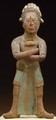

|  | Yucatán and Petén lowlands (Mexico) Island of Jaina (Maya) Whistle in the Form of a Dignitary A.D. 600-900 Ceramic and pigment 7-1/2 inches high, 3-1/4 inches wide, 2 inches deep The John R. Van Derlip Fund 47.2.5 |
Resources on the World Wide Web
http://www.differentworld.com/mexico/common/pages/history.htm
Art history, High school reading level, this page contains a timeline of Mexican Culture with a comparison to that of Rome, includes links throughout, from a Mexican Tourist Bureau
http://pacific.st.usm.edu/~tgparker/maya.html
Art History and archaeology, high school reading level,"The Ancient Mayan Civilization" with index links to articles about daily life, art, etc. this is the main index page, low images, no direct information on ceramics
http://indy4.fdl.cc.mn.us/~isk/maya/maya.html
Archaeology and cultural anthropology, High School Reading level,"The Maya Pages-Past and Present", organized by topic, no information directly related to our object
Resources in Print
Berjonneau, Gérald and Jean-Louis Sonnery. Precolumbian Art: Mexico, Guatemala, Honduras. Boulogne, France: Editions Arts, 1985.
Eckholm, Gordon F. and Luis Aveleyra Arroyo de Anda. "Clay Sculpture from Jaina." Natural History 74, no. 4 (1966): 311-317.
Smith, Bradley. Mexico: A History in Art. Garden City, N.Y.: Doubleday & Company, 1968.
Search ArtsConnectEd by keyword.
Search the ArtsConnectEd database, a joint project of the Minneapolis Institute of Arts and the Walker Art Center. By choosing one of the words below, you will be searching through the artworks, library records, educational materials, and more.
Maya, clay, ceramic, figure, sculpture, whistle, instrument, Mexico, Jaina, archeology, dignitary, pottery, astronomy, calendar, portrait, tomb, clay

Key ideas.
Where does it come from?
What does it look like?
How was it used?
How was it made?
Discussion questions.
Additional resources.
Select another piece.